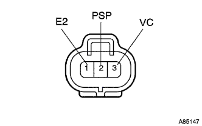
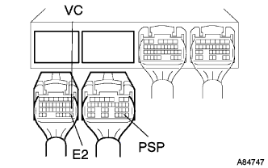

DTC P0550/75 PS圧力センサ系統 |
| ＤＴＣ Ｎｏ． | ＤＴＣ検出条件
| 点検部位 |
|---|---|---|
| P0550/75 |
|
|
| 手順1 | パワーステアリング オイル プレッシャ センサ点検 |
参照)
|
| ||||
| OK | |
| 手順2 | ワイヤハーネスまたはコネクター点検（エンジンコントロールコンピュータ-パワーステアリングオイルプレッシャーセンサ） |
|  |
エンジンコントロールコンピュータのコネクタＡ、Ｂおよびパワーステアリングオイルプレッシャーセンサのコネクタを切り離す。
|  |
SST(トヨタエレクトリカルテスター)を使用して、エンジンコントロールコンピュータの車両側コネクタ←→パワーステアリングオイルプレッシャセンサの車両側コネクタ間の動通を点検する。(端子配列は参照)
| 測定端子（端子名） エンジンコントロールコンピュータ←→パワーステアリングオイルプレッシャーセンサ | 基準 |
|---|---|
| B29(PSP)←→2(PSP) | 導通あり |
| A28(E2)←→2(PSP) | 導通なし |
| A18(VC)←→3(VC) | 導通あり |
| A28(E2)←→3(VC) | 導通なし |
| A28(E2)←→1(E2) | 導通あり |
|
| ||||
| OK | ||
| ||